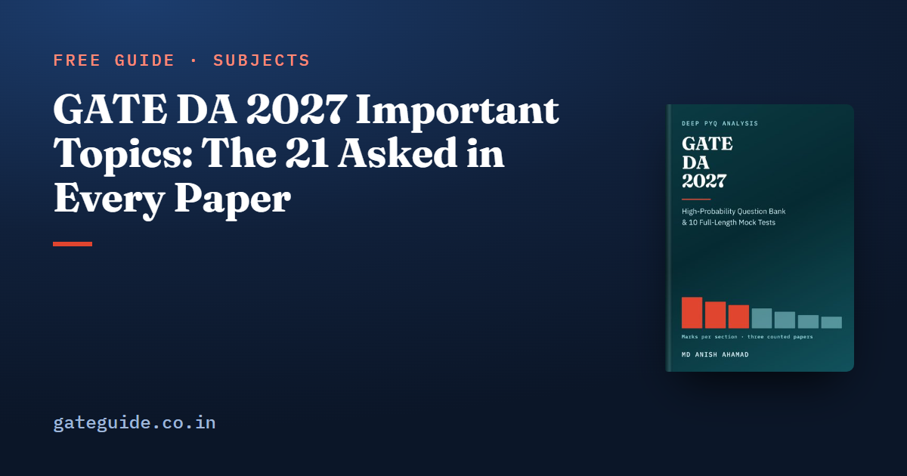

GATE DA 2027 Important Topics: The 21 Asked in Every Paper

GATE DA has been set three times — 2024, 2025 and 2026 — and that is the whole record. Counted question by question, 21 topic groups appeared in all three papers. Between them they account for 100 of the 165 technical questions and 155 of the 255 technical marks, 60.8 per cent. Those 21 are where GATE DA 2027 preparation should start.
In this guide
This guide lists them section by section, with the questions that asked them, and then names the syllabus topics that no paper has yet set.
Key takeaways
- "Important" here means asked in every one of the three papers. With three papers, recurrence is the strongest evidence there is; one paper's emphasis is not.
- The heaviest single group is Python code, 18 marks over ten questions. Continuous random variables and the exponential distribution come next at 13.
- One Bayes' theorem question, one multi-layer perceptron question and one adversarial-search question appeared in every paper.
- Several named topics have never been set: hypothesis tests, LU decomposition, linked lists, mergesort, multiple regression. They are cheap to cover.
- Three papers show patterns, not trends. Nothing below says a topic will appear in 2027.
The 21 groups asked in every paper
Each counted question sits in exactly one group, and the groups follow the wording of the official 2027 syllabus.
| Section | Topic group | Marks | Questions |
|---|---|---|---|
| Probability and Statistics | Continuous random variables, exponential, CDF | 13 | 8 |
| Probability and Statistics | Poisson, normal, t and chi-squared distributions | 7 | 5 |
| Probability and Statistics | Counting, axioms, sample space and events | 6 | 5 |
| Probability and Statistics | Conditional probability and Bayes' theorem | 5 | 3 |
| Programming | Programming in Python | 18 | 10 |
| Programming | Graph traversals and basic graph algorithms | 9 | 5 |
| Programming | Basic sorting algorithms | 5 | 3 |
| Programming | Binary search | 4 | 3 |
| Machine Learning | Classification problems: separability, updates, metrics | 9 | 6 |
| Machine Learning | Multi-layer perceptron | 6 | 3 |
| Machine Learning | Hierarchical clustering | 5 | 3 |
| Database | Relational algebra and tuple calculus | 8 | 5 |
| Database | SQL | 6 | 4 |
| Database | Normal forms and functional dependencies | 6 | 4 |
| Linear Algebra | Projection, orthogonal and idempotent matrices | 7 | 4 |
| Linear Algebra | Eigenvalues, eigenvectors and determinants | 5 | 4 |
| Linear Algebra | Vector spaces and subspaces | 4 | 3 |
| Section 7 | Search: uninformed, informed, adversarial | 10 | 7 |
| Section 7 | Propositional and predicate logic | 10 | 7 |
| Calculus and Optimization | Maxima and minima | 8 | 5 |
| Calculus and Optimization | Limits | 4 | 3 |
Section 7 is the syllabus section that lists search, logic and reasoning under uncertainty.
The heavy sections: Probability, Programming, Machine Learning
Probability and Statistics
The exponential distribution carries four questions on its own: GATE 2024, Q.57; GATE 2025, Q.21; GATE 2025, Q.41; and GATE 2026, Q.34. Every one turns on the survival function or the two moments:
The memoryless property, , is the same fact used once more.
Bayes' theorem appeared as a numerical-answer question in every paper — GATE 2024, Q.58; GATE 2025, Q.31; GATE 2026, Q.57 — each a posterior over two hypotheses or two boxes. The method never changes: the law of total probability for the denominator, one product for the numerator.
The named distributions are tested as facts: which moments, which tails, which sums. is chi-squared with one degree of freedom, and the t-distribution is the standard normal with heavier tails.
Programming, Data Structures and Algorithms
Python is the largest group in the paper. The questions are of two kinds. Traces ask what a program prints or how many calls it makes. Semantics questions test one feature that catches people who learned another language first: extend against append (GATE 2025, Q.23), a mutable default argument shared between calls (GATE 2026, Q.16), and closures capturing a variable rather than a value (GATE 2026, Q.50). Trace recursion as a written call stack, never in your head.
Graph traversals appeared every year — GATE 2024, Q.14; GATE 2025, Q.65; GATE 2026, Q.40 — and the reliable skill is running BFS or DFS by hand with neighbours in the stated order. Binary search has been asked only about its cost: at most comparisons on sorted, randomly accessible input. Sorting questions want exact counts of passes, swaps and comparisons, not asymptotic bounds.
Machine Learning
The multi-layer perceptron drew one two-mark question in every paper: GATE 2024, Q.43; GATE 2025, Q.42; GATE 2026, Q.56. The three skills are counting parameters layer by layer, a forward pass by hand, and the chain rule back through one hidden unit. Without biases, a network with layer widths has weights.
Hierarchical clustering appeared every year (GATE 2024, Q.42; GATE 2025, Q.30; GATE 2026, Q.36): single linkage merges on the closest cross-cluster pair, complete linkage on the farthest, and the same matrix can give different trees. Classification problems is where the paper puts machinery the syllabus does not name: the perceptron update, one gradient step, and metrics such as precision and recall , asked in GATE 2026, Q.47.
The rest: Database, Linear Algebra, Section 7, Calculus
Database Management and Warehousing. Relational algebra, SQL and normal forms appeared in all three papers, and the habit is "here are the tables, evaluate this" — a tuple count, a row count, an exact output. One tool answers nearly all of the normal-form questions: attribute closure, which gives keys, implied dependencies and normal-form tests.
Linear Algebra. Projection, orthogonal and idempotent matrices are the only group to appear in every paper at two marks or more. GATE 2026, Q.52 asked about the centring matrix , which is symmetric and idempotent, with eigenvalues 0 and 1. The eigenvalue questions were each settled by a structural fact rather than a cubic: trace is the sum of the eigenvalues, the determinant is their product, and has eigenvalues . Eight of the section's 19 questions were MSQs, so learn properties exactly; the MSQ, MCQ and NAT strategy guide applies to DA as much as to CS.
Section 7. Adversarial search appeared in all three papers — GATE 2024, Q.25; GATE 2025, Q.43; GATE 2026, Q.30 — so practise minimax and alpha-beta on paper trees with "prune when " written at the top of the page. The two-mark search questions are traces, and the errors are bookkeeping: stack against queue, and when the goal test happens. Logic is examined two ways, truth-table mechanics and translating English into formulas; the second is where marks are lost.
Calculus and Optimization. Maxima and minima and limits appeared every year. On a closed interval, check the endpoints: the global extreme is often there rather than at a critical point.
Named in the syllabus, never set
Every topic below is named in the 2027 syllabus and has no counted question in any of the three papers.
| Section | Named but never examined |
|---|---|
| Probability and Statistics | Confidence intervals; z-test, t-test, chi-squared test |
| Linear Algebra | LU decomposition; partition matrices |
| Programming | Linked lists; mergesort |
| Machine Learning | Multiple linear regression; k-fold cross-validation; divisive clustering; a logistic-regression calculation |
| Section 7 | A posterior computed by variable elimination or sampling |
A judgement, labelled as one: these are short, named, and a natural source of one-mark questions. Three papers are too few to read a zero as avoidance. Give each an hour rather than a week.
Where one paper is doing the talking
Some figures look like signals and rest on a single paper. Logic took 6 marks in 2026, against 3 and 1 in the two earlier papers. Reasoning under uncertainty appeared in 2024 and 2025 and not at all in 2026. Continuity and differentiability carried 8 marks over 2024 and 2025 and none in 2026. Database Management rose to 18 marks in 2026, partly by setting its first ER-model question, GATE 2026, Q.61.
None of these is a trend. Each is one paper's choice, and the 2027 paper will be set by IIT Madras, which has never set a DA paper.
A study order that follows the record
- Secure the 21 groups first, heaviest sections first: Probability, Programming, Machine Learning, then Database, Linear Algebra, Section 7 and Calculus.
- Treat General Aptitude as a fixed 15 marks — its first question has been a word analogy in all three papers. The General Aptitude guide covers the section.
- Then cover the never-set topics, briefly.
- If you are deciding between papers, the GATE CS vs GATE DA comparison sets the syllabi side by side, and the exam dates guide gives the calendar to work back from.
This guide names the 21 groups. The GATE DA 2027 book works through every topic group in all eight subject chapters with the questions behind each, and backs them with 907 questions with worked solutions — 257 in the subject chapters and 650 across 10 full mock tests — in 614 pages.
Frequently asked questions
What are the most important topics for GATE DA 2027?
On the counted record, the 21 topic groups that appeared in all three DA papers, which carried 155 of the 255 technical marks. The largest are Python code questions at 18 marks, continuous random variables and the exponential distribution at 13, and search, logic, graph algorithms and classification problems at 9 or 10 marks each.
Which topics have never been asked in GATE DA?
Several topics named in the syllabus have no counted question in 2024, 2025 or 2026. They include confidence intervals and the z, t and chi-squared tests, LU decomposition, partition matrices, linked lists, mergesort, multiple linear regression and divisive clustering. Three papers is a short record, so a zero is weak evidence, and each of these is cheap to cover.
Is Python important for GATE DA?
Yes. Programming in Python is the heaviest single topic group in the counted record, with ten questions and 18 marks spread across all three papers. The questions either ask what a short program prints or test one language feature, such as extend against append, a mutable default argument, or a closure that captures a variable.
Which machine learning topics are asked every year in GATE DA?
Three groups appeared in all three papers. Classification problems covers separability, the perceptron update, gradient steps and evaluation metrics. The multi-layer perceptron has had one two-mark question every year. Hierarchical clustering completes the three. Together they carry 20 of the 41 marks counted in Machine Learning.
Does GATE DA ask Bayes' theorem every year?
So far, yes. One numerical-answer Bayes question appeared in each paper, GATE 2024 Q.58, GATE 2025 Q.31 and GATE 2026 Q.57, and each was a posterior worked out with the law of total probability. That is a pattern across three papers, not a promise about the fourth.
Sources
- GATE 2027 official website (IIT Madras)
- GATE 2027 DA syllabus (IIT Madras)
- GATE 2024 DA question paper (archived by IIT Guwahati)
- GATE 2025 DA question paper (IIT Roorkee)
- GATE 2026 DA question paper (IIT Guwahati)
- GATE 2026 DA answer key (IIT Guwahati)
Dates, fees and the syllabus are set by the GATE 2027 organising institute and can change. Always confirm at gate2027.iitm.ac.in.